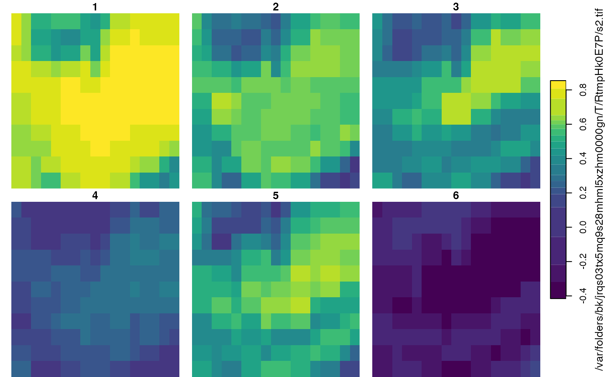
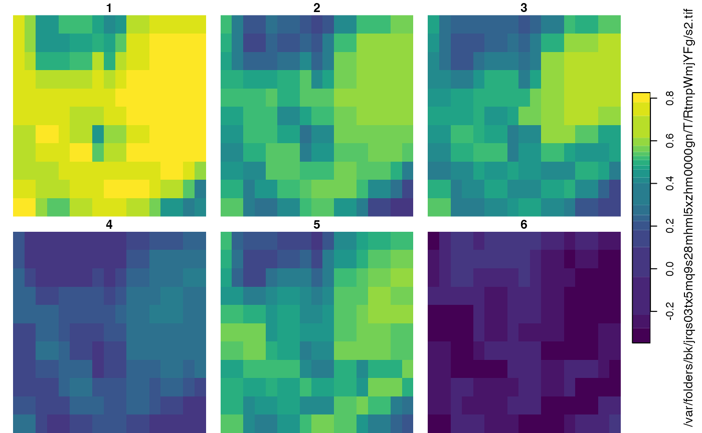
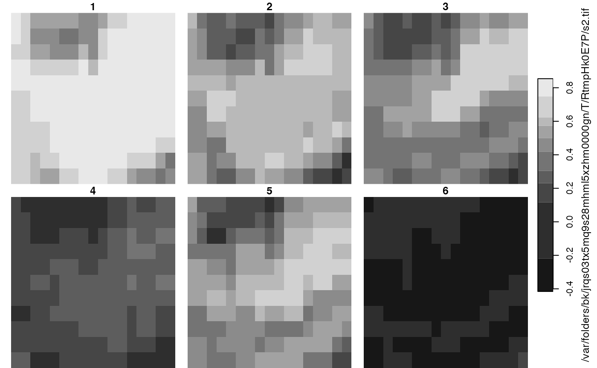
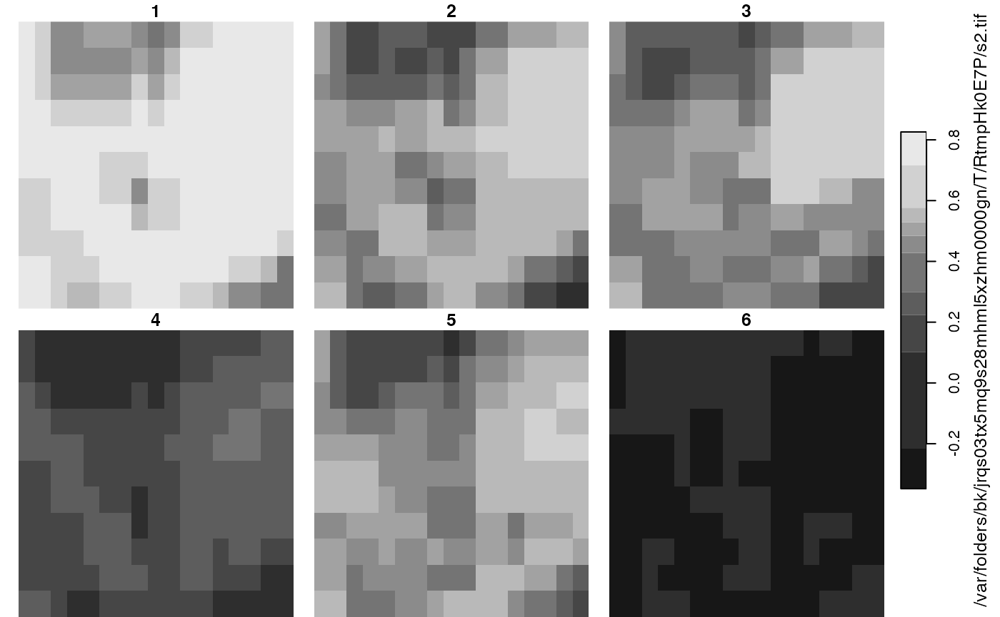

Calculating vegetation indices
vegetation-indices.Rmd
library(tinyforestR)
initialise_tf()
#> virtualenv: tinyforest
#> Using virtual environment 'tinyforest' ...
data("tf_data")
needs(cowplot)
lon <- tf_data$lon[1]
lat <- tf_data$lat[1]
tf_id <- tf_data$tf_id[1]
plant_date <- tf_data$plant_date[1]
s1 <- plant_date - 365
s2 <- plant_date + 365
pre <- get_vegetation_indices(tf_id = tf_id, lon = lon, lat = lat, start = as.character(s1), end = as.character(plant_date), buffer = 50)
#> Generating URL ...
#> Downloading data from https://earthengine.googleapis.com/v1/projects/earthengine-legacy/thumbnails/cb3b01a0ee46524a0d84853ff455e95e-330dd2d71b144b2b6dfadce4d1f2feaa:getPixels
#> Please wait ...
#> Data downloaded to /var/folders/bk/jrqs03tx5mq9s28mhml5xzhm0000gn/T/RtmpWmjYFg/s2.tif
post <- get_vegetation_indices(tf_id = tf_id, lon = lon, lat = lat, end = as.character(s2), start = as.character(plant_date), buffer = 50)
#> Generating URL ...
#> Downloading data from https://earthengine.googleapis.com/v1/projects/earthengine-legacy/thumbnails/2c5cfe528056ead8712a38b1d654fdd6-50268c3fda26d886451fca99d6db51cd:getPixels
#> Please wait ...
#> Data downloaded to /var/folders/bk/jrqs03tx5mq9s28mhml5xzhm0000gn/T/RtmpWmjYFg/s2.tif

cbind(pre$sf, post$sf) |>
pivot_longer(names_to = "vi", values_to = "vals", cols = NDVI:NDBI.1) |>
mutate(period = ifelse(str_detect(vi, ".1"), "post", "pre"),
vi = str_remove(vi, ".1")) |>
pivot_wider(names_from = period, values_from = vals) |>
mutate(change = post - pre) |>
ggplot() +
geom_boxplot(aes(vi, change)) +
geom_hline(yintercept = 0) +
coord_flip() +
labs(title = "Distribution of change in vegatation indices 1 year pre and post TF planting within 50m of TF point location") +
ggthemes::theme_clean() +
theme(plot.title.position = "plot")